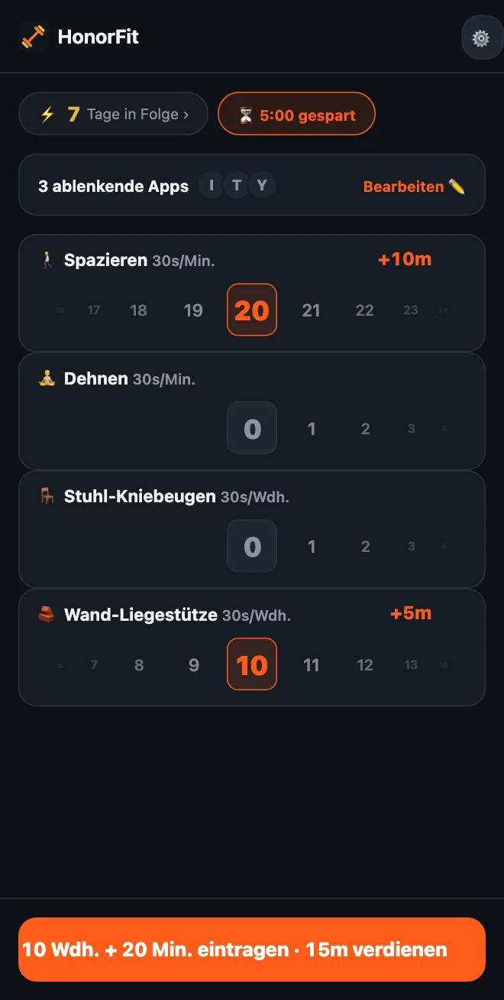

Keine Liegestütze? Sanfte Übungen, um deine Apps zu entsperren
Hallo zusammen! HonorFit kennen die meisten als Liegestütz-App-Blocker: Deine Apps bleiben gesperrt, bis du ein paar Wiederholungen gemacht und selbst eingetragen hast. Ohne Konto und ohne Kamera. Aber wenn deine Handgelenke, Schultern oder Knie da nicht so mitmachen, du den ganzen Tag am Schreibtisch sitzt oder Liegestütze gerade einfach nicht drin sind, ist das völlig okay.
Um die Liegestütze ging es mir eigentlich nie. Es geht um eine kleine Bremsschwelle zwischen dir und dem Scrollen, die dir nebenbei auch noch guttut. Eine Runde um den Block schafft das genauso gut. So richtest du HonorFit mit Übungen ein, die du wirklich machen kannst.
Fang mit den Standardübungen an
Ab Werk bekommst du vier Übungen: Liegestütze, Sit-ups, Klimmzüge und Kniebeugen. Davon sind Kniebeugen am sanftesten, und sie bringen je 30 Sekunden.
Und weil es nach dem Ehrensystem läuft, kontrolliert niemand, wie deine Kniebeuge aussieht. Wenn eine volle Kniebeuge zu viel ist, zählt auch, vom Stuhl aufzustehen und dich wieder hinzusetzen. Genauso Liegestütze gegen eine Wand oder die Küchenarbeitsplatte. Du entscheidest, was eine Wiederholung ist, und trägst sie einfach ehrlich ein.
Such dir deine eigenen aus (bis zu 3 kostenlos)
Ab Version 1.15.0 kannst du Übungen umbenennen und entfernen, festlegen, was jede bringt, und bis zu 3 eigene hinzufügen, alles kostenlos. Mit Pro (in den USA 3 $ im Monat oder einmalig 19,99 $; je nach Land und Währung ist der Preis anders, der Store zeigt dir deinen) kannst du so viele hinzufügen, wie du willst. Du kommst über das Zahnrad auf dem Startbildschirm und dann die Karte Übungen hin. Jeden Schritt im Editor habe ich hier beschrieben. Das sind die Sachen, die ich mir anschauen würde.
Zeit-Workouts (in Minuten eingetragen)
Stell eine beliebige Übung auf Minuten oder tippe auf einen der Vorschläge mit ⏱. Die, die hier passen:
- 🚶 Spazieren. Mein Favorit dafür. Wahrscheinlich der leichteste Gewinn überhaupt.
- 🧘 Yoga oder 🤸 Pilates, oder füg eine Übung namens Dehnen hinzu, wenn das eher das ist, was du machst.
- 🏊 Schwimmen und 🚴 Radfahren, beides gelenkschonend.
- 🪷 Meditieren. Kein Sport, aber es ist dabei, und zehn ruhige Minuten gegen zehn Minuten TikTok ist ein ziemlich guter Tausch.
Zeit-Workouts starten bei 30 Sekunden App-Zeit pro Minute, 20 Minuten Spazieren bringen also 10 Minuten. Das Rad zählt ganze Minuten, bis zu 100 auf einmal.
Übungen für den Schreibtisch (in Wiederholungen eingetragen)
Tippe auf ＋ Übung hinzufügen und gib einen Namen ein. Ein paar, die im Büro oder in einer kleinen Wohnung ohne Equipment funktionieren:
- Stuhl-Kniebeugen (Aufstehen und Hinsetzen): vom Stuhl aufstehen, wieder hinsetzen.
- Wand-Liegestütze oder Schreibtisch-Liegestütze: Liegestütze gegen eine Wand oder einen stabilen Schreibtisch. Je höher die Fläche, desto leichter.
- Wadenheben: auf die Zehenspitzen, wieder runter. Geht auch, während du auf die Mikrowelle wartest.
- Gehen auf der Stelle: der Vorschlag Kniehebelauf, nur langsamer. Benenn ihn um, wenn du magst.
- Beckenheben und Kegel-Übungen: leise, ohne Equipment, und Kegel-Übungen kannst du im Meeting machen, ohne dass es jemand merkt. Dazu habe ich einen ganzen Beitrag geschrieben.
Halteübungen (Plank, Wandsitzen)
Weil das Minutenrad ganze Minuten zählt, passt eine 20-Sekunden-Plank da nicht wirklich rein. Ich würde Halteübungen auf Wdh. lassen und festlegen, was eine Wiederholung ist, etwa „einmal 20 Sekunden halten“. Plank und Wandsitzen sind beide bei den Vorschlägen dabei.
Was sollte jede Übung bringen?
Neue Übungen starten bei 30 Sekunden pro Wiederholung. Du kannst in 5-Sekunden-Schritten hoch- oder runtergehen. Ein paar Anhaltspunkte:
| Übung | Zählt | Bringt | Zum Beispiel |
|---|---|---|---|
| 🚶 Spazieren | Minuten | 30s pro Minute | 20 Minuten Spazieren = 10 Min. |
| 🧘 Dehnen | Minuten | 30s pro Minute | 10 Minuten = 5 Min. |
| 🪑 Stuhl-Kniebeugen | Wdh. | 30s pro Wdh. | 10 = 5 Min. |
| 🧱 Wand-Liegestütze | Wdh. | 30s pro Wdh. | 10 = 5 Min. |
| Wadenheben | Wdh. | 10–15s pro Wdh. | 20 × 15s = 5 Min. |
| Plank | Wdh. (1 Wdh. = 20s halten) | 1 Min. pro Wdh. | 3-mal halten = 3 Min. |
Das sind nur meine Schätzungen, was sich fair anfühlt. Die richtige Zahl ist die, die du wirklich zahlst, statt zu schummeln. Wenn Spazierengehen die Gewohnheit ist, die du am meisten aufbauen willst, mach es mehr wert, etwa 1 Minute pro Minute.

Ein paar Setups zum Abgucken
- Bürotag: Stuhl-Kniebeugen, Wand-Liegestütze, Wadenheben, Spazieren.
- Sanft: Spazieren, Dehnen, Stuhl-Kniebeugen, Wand-Liegestütze (das ist der Screenshot oben).
- Ruhig: Spazieren, Yoga, Meditieren.
- Hellhörige Wohnung: Beckenheben, Kegel-Übungen, Stuhl-Kniebeugen, Spazieren.
Ich würde bei drei oder vier bleiben, weil jede Übung ihr eigenes Rad auf dem Startbildschirm bekommt. In der kostenlosen Version kommst du auf vier, indem du Standardübungen umbenennst (Kniebeugen in Stuhl-Kniebeugen, Liegestütze in Wand-Liegestütze) und den Rest als deine 3 eigenen hinzufügst.
Und wenn du eine Verletzung, Schmerzen oder eine Erkrankung hast, frag deine Ärztin, deinen Arzt oder eine Physiotherapeutin bzw. einen Physiotherapeuten, was für dich okay ist. Ich mache einen App-Blocker; bei Fragen zu deinen Knien bin ich echt nicht der Richtige, haha.
HonorFit Blocker ist ein kostenloser App-Blocker für iPhone und Android. Kein Konto, keine Kamera, nichts verlässt dein Handy. Du trägst deine Wiederholungen nach dem Ehrensystem selbst ein. Zeit-Workouts und bis zu 3 eigene Übungen sind kostenlos, mit Pro unbegrenzt. Das ist nicht für jeden etwas, aber vielleicht gefällt es ja dem einen oder der anderen von euch!